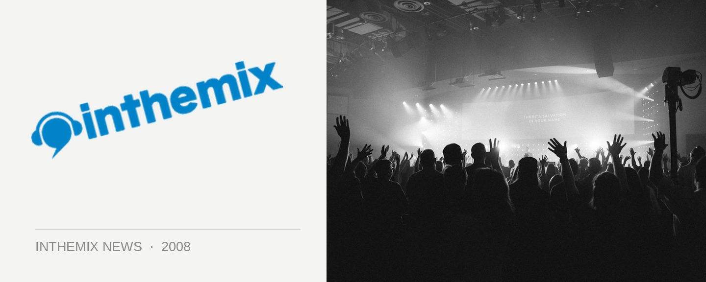

Hyper rewires for an Australian tour
Hyper has been known as a stalwart of the breaks scene, but recently has been just as likely to craft fidget and French-electro inspired sounds into his sets, an eclectic approach that was showcased most recently on his Rewired compilation earlier this year. Recently he’s been touring the festival circuit in full band mode, but later this month he’ll be returning to the familiar territory of Australian nightclubs that’ll see him debuting material off his upcoming Suicide Tuesday album.
Catch Hyper bringing it at the following shows…
Fri Oct 24. Canberra, Academy
Sat Oct 25. Sydney, Chinese Laundry
Fri Oct 31. Melbourne, Brown Alley
Sat Nov 1. Perth, Ambar